O problema
Muita responsabilidade para o setor de Coordenadoria de Qualidade, todas as demandas voltam para o setor.
O processo de emissão e acompanhamento das Não Conformidades (RNCs) é realizado por meio de um fluxo automatizado, integrado ao Google Forms, Google Sheets, Trello e Autocrat. O setor relator registra a ocorrência por meio de formulário eletrônico acessado via QR Code. Após o envio, as informações são integradas à planilha de controle e ao Trello, com geração automática do documento em PDF. assim é criada o FOR 1 A Coordenadoria da Qualidade (CQUAL) analisa o registro e, após sua aprovação, dá prosseguimento ao fluxo de notificação do setor responsável pelo tratamento. O setor notificado deve elaborar e encaminhar o plano de ação preenchido no modelo institucional, no prazo de até 30 dias, tendo iniciado a execução das ações propostas dentro desse período. Quando necessário, pode solicitar prorrogação mediante justificativa. enviado o FOR 2 Após a análise e aprovação do plano, são realizados os encaminhamentos pertinentes para tratamento ou apoio. Posteriormente, o setor relator avalia os resultados das ações implementadas FOR 3, enquanto a CQUAL auxilia os envolvidos e monitora o andamento do processo até sua conclusão. As informações registradas também são utilizadas para identificar recorrências, oportunidades de melhoria e necessidades de capacitação, subsidiando ações preventivas e o aperfeiçoamento contínuo dos processos institucionais.
Embora o fluxo de emissão e acompanhamento das RNCs seja automatizado, a condução do processo ainda está concentrada na Coordenadoria da Qualidade (CQUAL), que atua nas análises, nos encaminhamentos e no monitoramento das etapas. Essa centralização gera dependência da CQUAL para o andamento dos registros, aumenta a demanda de acompanhamento das pendências e pode dificultar a agilidade no tratamento das não conformidades. Além disso, a participação dos setores envolvidos no acompanhamento das próprias responsabilidades pode ser ampliada. Dessa forma, identifica-se a oportunidade de fortalecer a corresponsabilidade dos setores relatores e notificados, mantendo a CQUAL como unidade de apoio, orientação e monitoramento. Espera-se, com isso, otimizar o fluxo, dar maior autonomia aos setores e utilizar os dados das RNCs de forma estratégica para identificar recorrências, direcionar capacitações e promover a melhoria contínua dos processos institucionais.
AS-IS · o processo antes do MVP
O caminho real, com quem faz, o que entra, onde espera e o que é automatizável. Fonte: tabela AS-IS do projeto.

Fluxograma AS-IS · amarelo: etapa manual; tracejado: ponto de espera. Os números correspondem à tabela. Fonte Mermaid.
| Etapa | Quem faz | Entra | Ação | Sai | Sistema | Regra | Onde espera | Tempo | Automatizável |
|---|---|---|---|---|---|---|---|---|---|
| Identificação da não conformidade | Setor Relator | RNC | Preenchimento do forms | Relato da Não conformidade | FORMS | sem espera | 0 | Sim, com regra clara | |
| Encaminhamento de validação | CQUAL | Formulário 1 | Confirmação da RNC | Formulário 1 aprovado/encmainhado | Aprovação é visualizando/lendo e aprovando tanto enviando email para o setor relator quanto aprovando no trello para maior visualização dos protocolos. | Aprovado ou não | Trello | 24 | Sim, com regra clara |
| Encaminha para o setor notificado | CQUAL | Formulário 1 | Encaminha a notificação e anexa um modelo de formulário com as informações | Formulário 2 com plano de ação e evidencias de melhora | Sigadoc (aberto para ideias) | período de 30 dias para responder | Trello (para acompanhamento da CQUAL) Sigadoc com prazo | 24 | Sim, com regra clara |
| Elaboração e execução | Setor notificado | modelo de Formulário 2 | Elabora o plano de ação, executa e anexa o FOR 2 no sigadoc | Formulário 2 preenchido | Sigadoc | período de 30 dias para responder | Sigadoc | 720 | Pouco |
| Avaliação | Setor Relator | Formulário 2 | Avaliar se a execução do plano de ação foi adequado e gerou os resultados esperados | Formulário 3 | Sigadoc | Avaliação | Sigadoc | 48 | Pouco |
| Finalização/encaminhamento | CQUAL | Formulário 3 | Verifica o processo inteiro e da conclusão ou encaminha para os setores responsáveis | Métrica dos erros e não conformidades da POLITEC | Sigadoc | Decide se vai ser finalizado ou não | Sigadoc | 48 | Sim, com apoio humano |
TO-BE · o processo com o MVP
O que muda em cada etapa, quem passa a fazer e o ganho esperado. Fonte: tabela TO-BE do projeto.

Fluxograma TO-BE · verde: máquina (automação local); azul: pessoa (fé pública). Fonte Mermaid.
Quando o RNC for gerado sera encaminhado para os setores responsáveis e cada uma fara seu papel sendo necessário avaliar apenas a entrada e saída da não conformidade.
- Registrar a RNC
Continua pelo QR Code e Forms
A pessoa, sem mudançaAdesão mantida - Validar a entrada
A CQUAL aprova ou devolve, com prazo de 5 dias para complemento
A pessoa assistida pela máquinaPrazo visível - Responder com o plano
O setor notificado vê a RNC, o prazo de 30 dias e o alerta de vencimento
A pessoa assistida pela máquinaMenos cobrança da CQUAL - Avaliar o resultado
O setor relator vê o plano e registra a avaliação (FOR 3)
A pessoa assistida pela máquinaAvaliação no prazo - Indicadores
Painel de setores, categorias, recorrência e prazos
A máquina (automação)Uso estratégico das RNCs
| Etapa | O que muda | Quem faz | Benefício | Esforço |
|---|---|---|---|---|
| Registrar a RNC | Continua pelo QR Code e Forms | A pessoa, sem mudança | Adesão mantida | Baixo |
| Validar a entrada | A CQUAL aprova ou devolve, com prazo de 5 dias para complemento | A pessoa assistida pela máquina | Prazo visível | Baixo |
| Responder com o plano | O setor notificado vê a RNC, o prazo de 30 dias e o alerta de vencimento | A pessoa assistida pela máquina | Menos cobrança da CQUAL | Médio |
| Avaliar o resultado | O setor relator vê o plano e registra a avaliação (FOR 3) | A pessoa assistida pela máquina | Avaliação no prazo | Baixo |
| Indicadores | Painel de setores, categorias, recorrência e prazos | A máquina (automação) | Uso estratégico das RNCs | Médio |
O que o MVP entrega
Tela-assinatura: Quadro por etapa do ciclo da RNC.
Menu do MVP: PainelMinhas RNCsImportarEnviar ao setorConfiguração
Regras de negócio
| ID | Regra | Quando | Tipo | Exceção |
|---|---|---|---|---|
RN01 | Numeração DIRETORIA/ANO-SEQUENCIAL, única | Ao importar | Validação | Nenhuma |
RN02 | Sem resposta ao pedido de complemento em 5 dias, a RNC é anulada | Validação pela CQUAL | Negócio | Nenhuma |
RN03 | O setor notificado tem 30 dias para enviar o plano (FOR 2), com prorrogação justificada | Após a validação | Negócio | Prorrogação aprovada pela CQUAL |
RN04 | Ocorrência grave é encaminhada à corregedoria | Na validação | Negócio | Nenhuma |
RN05 | Recorrência: mesmo setor notificado e mesma categoria em 90 dias | No painel | Cálculo | Nenhuma |
RN06 | Cada setor vê só as RNCs em que é relator ou notificado | Na cópia do setor | Acesso | CQUAL vê todas |
RN07 | Não registrar nome de servidor, só o setor | Em todos os registros | LGPD | Nenhuma |
Papéis
| Papel | Quem é | O que vê | O que faz | O que não faz | Registro |
|---|---|---|---|---|---|
| CQUAL | Responsável geral | Todas as informações | Monitora e audita | Perder prazos | Aprovações e encaminhamentos |
| Setor relator | Identificador | Não conformidade e plano de ação | Relata e avalia resultado | Deixar de avaliar | Problema enfrentado e avaliçaõ do resultado |
| Setor Notificado | Causador raiz | Relato (sem identificar o servidor e sim o setor) | Analisa a não conformidade e planeja melhorias para diminuir os registros de não conformidade | Não executar as melhorias | Plano de ação e avaliação de melhorias |
Métricas do piloto
Como testar
O MVP é um `index.html` offline, com dados fictícios. Abra index.html.
cd Apps/rnc-nao-conformidade python construir.py python testes/testar.py python testes/cenarios.py python testes/jornada.py # Lightpanda (via WSL, CDP em 9222 e HTTP em 8000) python testes/jornada.py --cdp http://127.0.0.1:9222 --base http://127.0.0.1:8000
Documentos: PROJETO.md · sprint.md · README.md